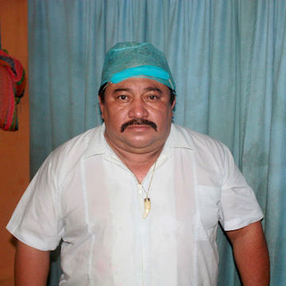

ДОН АРСЕНИО
БЕСКРОВНЫЕ ХИРУРГИЧЕСКИЕ ОПЕРАЦИИ
Мы искали его почти год. Получить информацию у местных индейцев не просто. И мы ездили в разных направлениях, колесили по ужасным дорогам, расспрашивая о "колдуне" - знахаре. Мы не знали ни его имени, ни где он живет. Знали только, что есть такой волшебник, который лечит от всех болезней, делая бескровные операции. По пути знакомились c замечательными шаманами, травниками, целителями, но "наш целитель" не всплывал нигде...
Мы возвращались в Мериду, столицу Юкатана, от очередного травника. До отъезда в Нью- Йорк оставалось два дня, мы решили провести их у моря, и в этот раз не разыскав курандеро... На заправочной станции я вышла купить воды и услышала разговор двух женщин о чудесном выздоровлении сына одной из них от рака. Когда она мне рассказала, что ему делали бескровную операцию, я поняла, что удача повернулась, наконец, к нам лицом.
Не раздумывая, мы развернулись и поехали назад в Кинтана Роо, в ночь, снова в неизвестность. Но были почти уверены, что мы его нашли.
Этот уникальный человек живет в живописном городке в центре полуострова Юкатан. Он впитал в себя традиции своего народа, индейцев Майя, и унаследовал "канал" от таинственного бразильского медиума, курандеро, легендарного Хорхе Лесла Черного, однажды приехавшего в их края и оставшегося в Мексике до самой смерти.
Каждый день толпы людей приезжают из разных уголков Мексики и из- за рубежа в надежде на исцеление от неизлечимых болезней, с огромной верой в дар и мастерство целителя, постигшего тайны целительских практик Майя, и обладающего невероятной энергией.
Он делает бескровные хирургические операции, а также в своей практике использует травы и настойки, знания о приготовлении которых ему достались по прямой линии от деда.
По-испански Дон Арсенио разговаривает с легким майайским акцентом, это делает его речь более проникновенной и мягкой. Когда он рассказывает о своей миссии, о своем предназначении служить людям, понимаешь, что человек этот говорит сердцем и волны любви проникают прямо в душу. Вообще Дон Арсенио немногословен и получить у него интервью достаточно сложно. Не потому, что он чувствует свою важность и значимость, как раз наоборот, из скромности и нежелания публичности. Он делает то, что должен, без помпы, без лишних слов. Гордость в его голосе можно почувствовать только тогда, когда он говорит о том, что является наследником древней традиции целителей, знания которых должны быть сохранены, а их линия продолжена.
- Дон Арсенио, как Вы начали работать самостоятельно?
- Знание передается из поколения в поколение, - говорит целитель.
Он рассказал нам, что пятнадцать лет работал водителем Хорхе Лесла Черного. За это время он стал ему не только другом, но и единственным помощником и учеником. До встречи с Хорхе Арсенио был инспектором Департамента общественных работ правительства штата Кинтана Роо, но знакомство с легендарным медиумом, целителем, ставшим его училем, полностью изменило жизнь Арсенио. И вот больше двадцати лет он продолжает традицию чудесных исцелений.
- Я не знаю, почему он выбрал именно меня, - говорит Арсенио, - у Учителя были и другие помощники. Но перед смертью он призвал меня и передал мне свой канал, а знания у меня к тому времени уже были. Он сказал, что готов уйти, а я могу уже работать самостоятельно через два месяца после его смерти. Так я начал работать девять лет назад и продолжаю до сих пор, слава Богу, все идет хорошо.
- Только вы работали с ним?
- Нет. Было около 8 человек.
- И все же ,как случилось, что именно Вы стали наследником этой линии?
- Я помогал Дону Хорхе, был его водителем, работал вместе с ним днем и ночью, куда бы он ни ехал, и Учитель исподволь начал обучать меня, показывать свои секреты, знакомить со своими Помощниками в Духовном мире. Мы проводили вместе очень много времени. Но никто не ожидал, что это буду именно я, даже члены его семьи. Я тоже.
- Не могли бы Вы описать, как проходит операция и в чем заключается Bаш метод?
- Я обычно не говорю на эти темы.
- Дон Арсенио, мы так долго Вас искали, проехали тысячи километров...
- Хорошо. Метод заключается в искусстве выполнять духовные операции. При этой работе должна обязательно рассекаться или раздвигаться кожная ткань за счет Божественной энергии, должно полностью, или почти полностью, отсутствовать наружное кровотечение, должна отсутствовать боль в момент самой операции. Часто я не помню, как проходит операция, но я верю в Бога и знаю, что обладаю Божественным даром. Наш метод требует, чтобы я и те, кто мне помогает во время операции и после нее, были преисполнены любви и доброты по отношению к больному. А тех пациентов, которые не верят в духовное, Божественное целительство, не следует осуждать или переубеждать, просто не обсуждать с ними суть лечения. Приступая к целительству, нужно проникнуться уважением к Божественной силе, нужно успокоиться физически и морально, отбросить все волнения и заботы о материальной жизни. Я вхожу в особое состояние глубокого внутреннего покоя и гармонии. Самым сложным было во время обучения научиться не думать о том, что и как делать, все происходит бессознательно и автоматически, руки сами все делают, а мысли могут только мешать передаче духовной энергии. Я являюсь как бы "каналом", пропускающим через сознание в мысли пациента сильную энергетическую вибрацию. Если возникает необходимость что-то удалить, то пальцы захватывают ненужную больную ткань и выбрасывают. Всю жизнь идет профессиональное и духовное самоусовершенствование. Главное условие успеха лечения - глубочайшая вера в Бога и в силы Бога, которые Oн передает целителю во время операции. Целитель должен быть подготовлен ментально и телесно. Это те принципы, которым учил меня мой Учитель. И он всегда со мной во время операций. Это очень помогает мне.
- Как происходит диагностикa?
- В стакан с водой разбивается яйцо. И в стакане видно все, что происходит с человеком на всех уровнях. Не только в физическом теле, но и на духовном уровне. Видны связи с другими людьми, друзья и враги. Отношение к людям. Все можно сказать о человеке, глядя в стакан сводой. Для ускорения процесса я спрашиваю больного на что он жалуется. Потом диагностирую, смотрю проблемные места, и мы готовим человека к операции. - Вы не все оперируете?
- Оперирую все. Но из-за недостатка места не лечу больных туберкулезом, гепатитом С, и СПИДОМ. Эти больные нуждаются в особом лечении. Я пока не могу им предоставить нужные условия.
- И Вам никто не предлагал их улучшить, открыть клинику, например?
- Здесь работал мой Yчитель. И я не должен пока покидать это место.
- Но вы можете, например, поехать в другую страну, в США?...
- Нет. Как же я оставлю людей? Ведь они едут ко мне издалека, зная, что я тут, что я им помогу. Нет. Не могу уезжать надолго. Меня приглашают иногда в Мексико Сити люди, связанные с правительством, я не могу им отказывать, есть музыканты, известные артисты. Они знают, что я не могу долго отсутствовать, присылают за мной машину, но я быстро возвращаюсь.
- Какие болезни подлежат исцелению?
- Почки, печень, позвоночник, мозг, женские, мужские проблемы, проблемы с беременностью, маткой, яичниками, кожные заболевания, заболевания иммунной системы, гормональные болезни и т.д. Рак, желудок, диабет, проблемы со зрением... Почти все.
- Что было самым сложным из того, чему учил Вас Дон Хорхе?
- Операции. И научиться контролировать кровь при операции. И смотреть сквозь тело "через сорок точек"...
- А где этому учился Дон Хорхе?
- У него тоже был учитель, который передал ему знания перед смертью. Дон Хорхе лечил, переезжая с места на место, пока не обосновался на Юкатане. Это тайные знания древних целителей. Они передаются из поколения в поколение. Когда один умирает, другой наследует их.
- Какой была Ваша первая операция?
- Это была операция на печень.
- А Вы не боялись, что что- то будет не так, что-то не получится?
- Нет. Я делал все так, как должен был делать. Первой была операция на печень, человек был из США. А потом на сердце. А потом люди стали приезжать автобусами со всего мира. - Сколько человек в день вы оперируете?
- По-разному. Иногда 10-20, иногда больше в период отпусков и каникул.
- Знаете ли Вы кого-нибудь, кто так же работает, в Мексике?
- Нет, не знаю. Один сосед пытался выдать себя за меня, но у него ничего не получилось. (Смеется).
- Сколько дней в неделю Вы работаете?
- С понедельника по субботу. С раннего утра, как только начинают приходить автобусы, и до конца, пока не приму всех.
- Готовите ли Вы себе последователя?
- Пока нет. Слава Богу, чувствую себя хорошо и у меня много энергии. Но в день, когда меня предупредят, что осталось немного, начну подготавливать следующего человека для продолжения нашей линии.
Дон Арсенио провел с нами больше часа. Он показал нам "приемные покои", действительно более, чем скромные, но в них, как сказал в заключение целитель, живет Бог, это дом Бога...
Уже больше года наш центр "Waking Up" привозит в Мексику людей, ищущих исцеления. Это другие, очень интересные и трогающие до глубины души истории выздоровления духовного и физического. И если вы выбрали этот Путь, если врачи не в силах помочь вашей беде, звоните, пишите нам.